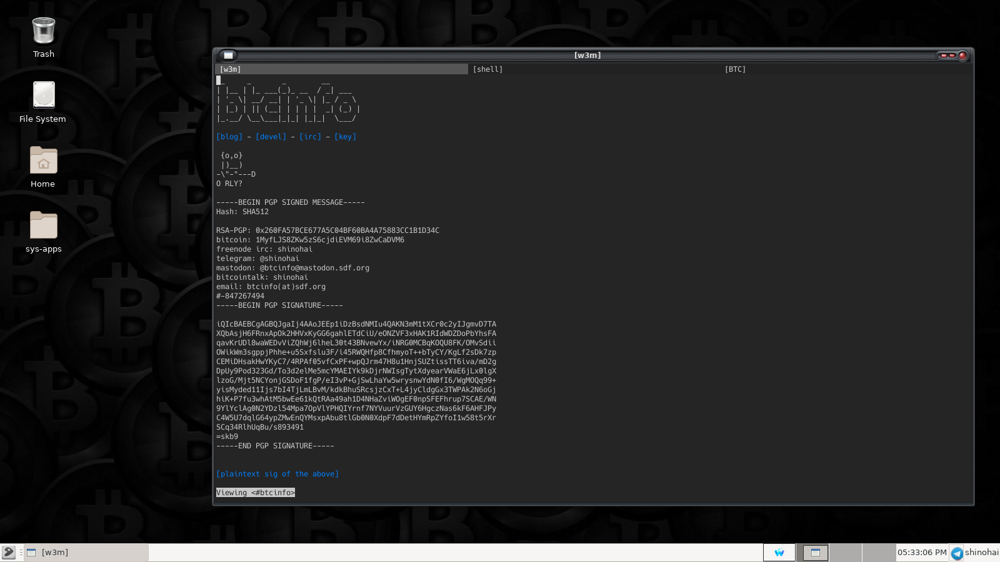

smalpest-95K quickstart guide
I am doing some experiments with jonsykkel's smalpest on some Android devices, and whipped up this post in case my memory fails me as I attempt to run this on yet another smol device. I will update with the termux build instructions for android below.
Start your smalpest instance inside a GNU screen instance:
screen -S smalpest -dm /usr/sbin/smalpest -u $USER -p $PASS -i 6697 -q 7778
Now connect to localhost:6697 from your irc client, and you can populate a pestnet wot:
Add a handle for PEER:
%PEER $PEER
Then add a KEY for PEER:
%KEY $PEER $KEY
Update the AT (Address Table) for PEER:
%AT $PEER $IP:$PORT
Start chatting and see if you appear in the bitdash logs.
Termux build instructions:
PLACEHOLDER
Building awt's akris pestnet client on Gentoo
awt recently released a new station and client library dubbed "akris" for use with the pestnet protocol. Detailed instructions for installing it using various methods are detailed on alethepedia, but here I am documenting how I built on Gentoo in a virtual environment using Python 3.11 and esthlos-v.
I started by creating the python virtual environment in my /devel/ directory, making sure I specified my py interpreter since akris-desktop requires Python >= 3.11. Then we switch to the newly created directory and activate the venv.
python3.11 -m venv pest
cd pest/ && source bin/activate
Now we make a directory for akris and grab the vpatches and seals:
mkdir -p akris && cd $_
mkdir -p patches/ seals/ wot/
wget http://v.alethepedia.com/akris/akris-genesis-99999.vpatch -P patches/
wget http://v.alethepedia.com/akris/akris-genesis-99999.vpatch.thimbronion.sig -P seals/
wget http://wot.deedbot.org/57512CE78CF08BB25FE277A4B16136257FB8FBDD.asc -O wot/thimbrion.asc
After obtaining the needed ingredients, we can now press using V:
v press akris-genesis-99999.vpatch .
When the press completes successfully, we can install the akris station library to our venv using pip:
pip install -e .
Now we can move back to the root 'pest' directory and make a new directory to install the desktop components in:
cd ~/devel/pest
mkdir -p gui && cd $_
mkdir -p patches/ seals/ wot/
Grab the patches and seals much like we did above for the station library:
wget http://v.alethepedia.com/akris_desktop/akris-desktop-genesis-99999.vpatch -P patches/
wget http://v.alethepedia.com/akris_desktop/akris-desktop-genesis-99999.vpatch.thimbronion.sig -P seals/
wget http://wot.deedbot.org/57512CE78CF08BB25FE277A4B16136257FB8FBDD.asc -O wot/thimbrion.asc
Press it, again using `V`:
v press akris-desktop-genesis-99999 .
akris-desktop requires tk, so you might need to install it from portage:
emerge -av dev-python/tk
Once that completes, you will have to manually install icons and imagery for the gui client, since `vdiff` does not handle binary files:
cd akris-desktop/
wget http://v.alethepedia.com/akris_desktop/images.tar.gz
wget http://v.alethepedia.com/akris_desktop/images.tar.gz.thimbronion.sig
Verify the signatures before untarring, because you aren't a heathen:
gpg-1.4.10 --verify images.tar.gz.thimbronion.sig images.tar.gz
gpg: Signature made Tue Jul 25 10:54:59 2023 EDT
gpg: using RSA key 0xB16136257FB8FBDD
gpg: Good signature from "Thimbronion
Now we have verified sigs, decompress and clean up:
tar zxf images.tar.gz
rm -f images.tar.gz images.tar.gz.thimbronion.sig
Then install akris-desktop using pip:
cd ..
pip install -e .
Now we're almost done. Go back to the root pest directory:
cd ~/devel/pest
Create a little start script called "start-gui" for ease of use containing the following:
#!/usr/bin/env bash
python gui/bin/main.py
Now you can easily start your pest station and client from the virtual environment by running `./start-gui`. If all goes well, you'll be greeted with a screen like this:

For more information, visit alethepedia: akris and akris-desktop.
Suckless st regrind
This is just a redo of the original st vpatch with a tweak that allows drawing of images directly to the terminal. Much like the patch listed in the st FAQ this version does not cancel double-buffering, thereby doing away with the flickering that I observed when I first tried this. While not perfect, it does render images well with w3m for me, and by abusing the w3m image display doubles as a simple image viewer with a little bash-foo. Here's how you do that:
#!/bin/bash
if [ -z $1 ]; then
echo
echo "USAGE: timg "
echo
exit 0;
fi
W3MIMGDISPLAY="/usr/local/bin/w3mimgdisplay"
FILENAME=$1
FONTH=14
FONTW=8
COLUMNS=`tput cols`
LINES=`tput lines`
read width height <<< `echo -e "5;$FILENAME" | $W3MIMGDISPLAY`
max_width=$(($FONTW * $COLUMNS))
max_height=$(($FONTH * $(($LINES - 2))))
if test $width -gt $max_width; then
height=$(($height * $max_width / $width))
width=$max_width
fi
if test $height -gt $max_height; then
width=$(($width * $max_height / $height))
height=$max_height
fi
w3m_command="0;1;0;0;$width;$height;;;;;$FILENAME\n4;\n3;"
tput cup $(($height/$FONTH)) 0
echo -e $w3m_command|$W3MIMGDISPLAY
Lab notes: Pest and Alcuin part two
Since the last installment there has been updates made to Alcuin, including a rename to Blatta along with a genesis.vpatch for the same, and more recently some bugfixes which I successfully applied and will be testing in the coming week.
So far in testing I have been able to:
- Set up a testnet on localhost.
- Peer with Blatta's creator remotely and pass messages.
- Connect an ircbot using it's own station.1
Interest seems to be brewing in the project, so I hope to grow my WoT for this item and look forward to posting more about this item as work progresses.
Lab notes: Pest and Alcuin part one
Pest is, as defined in the draft spec:
a peer-to-peer network protocol intended for IRC-style chat. It is designed for decentralization of control, resistance to natural and artificial interference, and fits-in-head mechanical simplicity -- in that order.
The fall of TMSR and the subsequent fleanode collapse has evidently provided the catalyst to get the ball rolling on a replacement communications system that doesn't leave the user at the mercy of SJW's or fiat government stooges and other central points of failure. Discussion on the pest spec has been under way in dulapnet irc ever since asciilifeform first published the draft spec in September of this year, and yours truly has just now had time to carve out a bit of time to review the spec, chatlogs, and thimbronion's implementation of the pest spec in Python, known as Alcuin.
Weechat is my preferred irc client, and a few days ago in the logs thimbronion reported that weechat and some other clients would not send custom commands to the server. After looking into this a bit, I discovered weechat will send nonstandard commands to a connected server when prefixed with the `/quote` command. Even further digging into client behavior revealed that this behavior can be modified by simply changing a setting weechat has turned off by default:
/set irc.network.send_unknown_commands on
After setting the above the Alcuin server seemed to process commands exactly as it should, though much work remains to implement the entire spec (as stated in the author's README file). After setting up Python 2.7 on a remote machine and obtaining the script to generate keys from thimbronion, I was able to set up two pest stations and interact between them.
To help make it easier to test and experiment with Alcuin, I have produced a temporary genesis vpatch and sig based on thimbronion's version 9994 tarball and containing the missing key generation script mentioned previously. I will make every effort to keep this updated as the project progresses.
To be continued .....
Suckless st and tabbed
In my quest to vpatch more things that I use regularly, I finally made a section on this site for my collection of suckless tools. While urxvt served me well for some time, it grows more and more into a bloated mess every update for so simple an item as a virtual terminal. st + tabbed combined have far fewer lines of code, is all in C, and with a few tweaks mimics all the good functionalities I need.
The st vpatch is vanilla st with the scrollback patches and externalpipe patch applied so I get a clean genesis starting point, and tabbed is the one found at suckless.org but modified slightly to allow allow renaming of open tabs (more on that below).
Both items are pressed in the usual way using your preferred implementation of V. The `config.h.def` file can be adjusted further to operator preferences before building with `make`.
After the items are installed to your path, a couple of bash functions can be added to one's aliases to ease tabbed terminal startup and renaming of tabs:
function term() {
xid="$(tabbed -c -d -s -r 2 st -w x)"
st -w "$xid" bash &
}
function set-title() {
if [[ -z "$ORIG" ]]; then
ORIG=$PS1
fi
TITLE="\[\e]2;$*\a\]"
PS1=${ORIG}${TITLE}
}
Now I have an easy way to open a tabbed terminal and quickly rename tabs to organize work. For me, it looks something like this:

These items can now be found here: